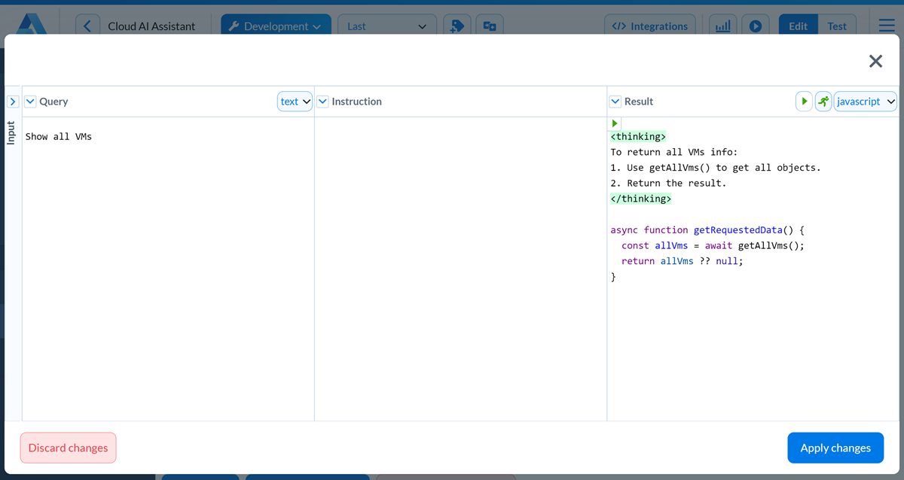
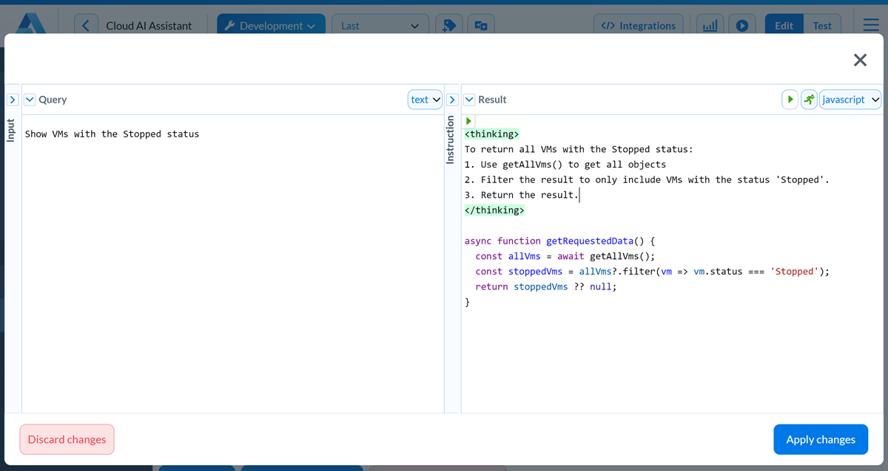
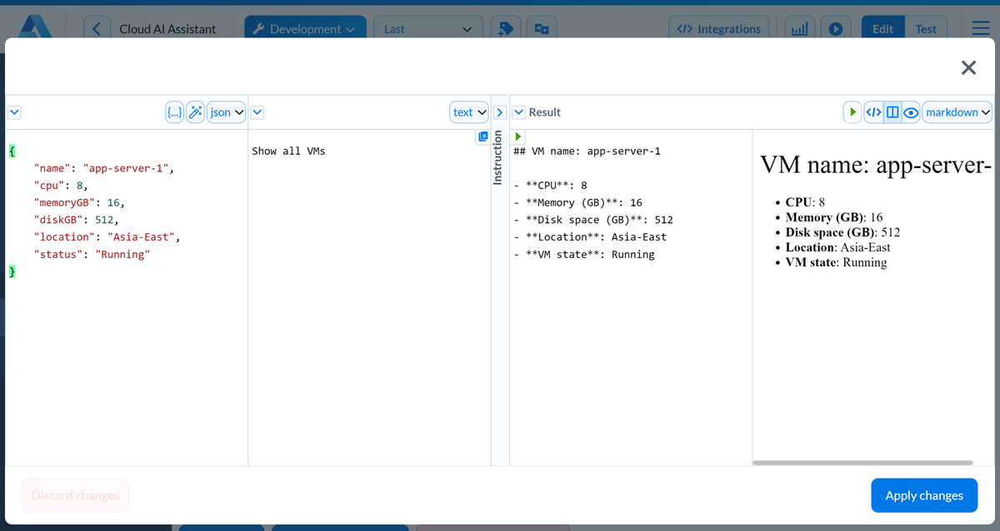

Dynamic corpus¶
Note
The dynamic corpus is available in SLU 4.2 and later.
The Q&A service seamlessly integrates with dynamic data sources, such as API services and databases. It allows you to automatically retrieve semi-structured data (JSON) from third-party data providers, convert it to natural language format and utilize the retrieved data to answer user queries.
The dynamic corpus transforms how users access and receive dynamic data. It offers accurate responses to a diverse range of queries in real time, all in a convenient and user-friendly manner.
Corpus parameters¶
To define a dynamic corpus, use the corpus() function:
corpus({
title: `Infrastructure requests`,
input: project.objects,
query: transforms.vms_queries,
output: project.cleanObjects,
transforms: transforms.vms_answer,
priority: 1
});
Name |
Type |
Is Required |
Description |
|---|---|---|---|
|
string |
False |
Corpus title. |
|
function |
False |
Function used to provide context data to the dynamic corpus. |
|
function |
True |
Transforms function used to process user queries and generate code to retrieve necessary data. |
|
function |
False |
Function used to clean up data passed to the dynamic corpus. |
|
function |
False |
Transforms function used to format the corpus output. |
|
integer |
False |
Priority level assigned to the corpus. Corpuses with higher priority are considered more relevant when user requests are processed. |
Example of use¶
Assume you have a JSON object describing a list of VMs in your cloud environment. You want to use this information as a dynamic data source so that users can ask questions about VMs with natural language.
To use a dynamic corpus for an AI assistant, perform the following steps:
Retrieve data: in the dialog script, write a function that will retrieve data from a dynamic data source.
[Optional] Clean up data: convert the retrieved data to a simpler form to use it with the dynamic corpus.
Create transforms: for each dynamic corpus, define the following transforms in the AI assistant project:
[Required] query: use this type of a transform to teach the AI assistant how to generate code that will retrieve necessary data based on user queries.
[Optional] transforms: use this type of a transform to teach the AI assistant how to format the corpus data output.
Add a dynamic corpus: in the dialog script, define a dynamic corpus and the corpus parameters.
Retrieving data¶
To retrieve data from a dynamic data source, you will typically make an API call to the data provider. To keep things simple, we will add a JSON object defining VMs to the dialog script directly.
In the dialog script, create the project.infrastructure variable, add the getData() function and save it to project.objects:
project.infrastructure = {
"vms": [
{
"name": "prod-web-server",
"cpu": 4,
"memoryGB": 8,
"diskGB": 256,
"location": "US-West",
"status": "Running"
},
{
"name": "prod-db-server",
"cpu": 2,
"memoryGB": 4,
"diskGB": 128,
"location": "EU-Central",
"status": "Stopped"
},
{
"name": "stage-app-server",
"cpu": 8,
"memoryGB": 16,
"diskGB": 512,
"location": "Asia-East",
"status": "Running"
}
]
}
function getData() {
const data = project.infrastructure;
return (data.vms);
}
project.objects = getData;
Cleaning up data¶
This step is only required if you want to clean up and simplify data before sending it to the dynamic corpus.
Assume we only want to give replies about VMs in the production environment, those with prod in their names. To the dialog script, add the filterObjects() function and save it to project.cleanObjects:
function filterObjects () {
const vmArray = getAllVms();
return vmArray.filter(vm => !vm.name.includes('stage'));
}
project.cleanObjects = filterObjects;
Adding a query transform¶
With a query transform, you can teach the AI assistant to process the input JSON data and generate code that returns all information needed to answer user questions.
You can teach the AI assistant using functions added to the dialog script. Each function used in transforms must have a clear function explanation in the comments preceding the function code.
To the dialog script, add the
getAllVMs()function with the function description:Dialog script¶/** @tool: Returns an array of vms @param: @return: an array with short description of objects with the following fields: [ { "name": vm_name, "cpu": cpu_count, "memoryGB": vm_memory, "diskGB": disk_space, "location": vm_location, "status": Running/Stopped }, ... ] */ function getAllVms() { const data = project.infrastructure; const objects = []; if (data.vms && Array.isArray(data.vms)) { objects.push(...data.vms); } return objects; }
In the AI assistant project, under Transforms, create the
vm_queriestransform with the following data:In the Instruction field, import
getAllVmsfunction and provide general instructions on how to process VMs data:Instruction¶#import getAllVms When a question is asked, make a decision if the question relates to VMs or not. If question does not relate to VMs or is too generic, generate null. If question relates to VMs, write an async function getRequestedData() that takes no parameters. getRequestedData() must call the provided functions to construct a JSON that will have all the necessary information to answer the question.
In the Examples section, add an example to answer the
Show all VMsquestion. To add the example result, in the top right corner, click the Generate result button and edit the created function code if necessary.Add another example to ask a question about VMs in the
Stoppedstatus:
Adding an output transform¶
With an output transform, you can define the output format for the AI assistant’s answer.
In the AI assistant project, under Transforms, create the
vm_answerstransform with the following data:In the Instruction field, provide general instructions on how to format the VMs data:
Instruction¶The input contains sample JSON with VM data, the query contains a set of sample user questions, the result field contains the formatted answer to be provided.
In the Examples section, add an example to answer the
Show information about app-server-1question:
Adding a corpus¶
To define a dynamic corpus, add the corpus() function with the following parameters to the dialog script:
corpus({
title: `Infrastructure requests`,
input: project.objects,
query: transforms.vms_queries,
output: project.cleanObjects,
transforms: transforms.vms_answer,
priority: 1
});
Now, you can ask the AI assistant questions like:
Show all VMsWhat VMs are located in the US region?What VMs have more than 2 CPUs?